In China Employee Termination: Pulse Signal-Stack Brief for Foreign Employers (2026 Hourly Run)
Key takeaways
- Foreign operators get better outcomes when they assess termination readiness through a layered signal stack, not a single legal check.
- China termination risk is usually a stack problem: legal route may be acceptable while HR/payroll/governance signals remain weak.
- The most costly errors still come from cross-functional mismatch between route rationale, evidence records, communication wording, and settlement execution.
- Practical control quality, especially around payroll and document integrity, is what preserves defensibility under pressure.
- Legal depth remains essential, but high-quality execution depends on rapid signal diagnosis and response.
Pulse opener: a case can look green on top but red underneath
In cross-border China operations, cases often get approved because the top signal looks acceptable: legal route appears supportable. But deeper layers—evidence ownership, communication consistency, payroll assumptions, local uncertainty, and closure integrity—may still be unstable. When teams only watch the top signal, they approve timeline progress without true readiness, then absorb avoidable dispute and rework costs later.
This run rotates to a signal-stack format for faster decision quality. It gives foreign clients a practical model to scan multiple risk layers in sequence and identify where a case should proceed, pause, or escalate.
Plain-language legal context first
China termination decisions are generally route-based under labor law and implementation regulations. In dispute contexts, the practical test is often coherence: do records and actions across functions align with the claimed route? Where inconsistencies appear, exposure increases.
For non-local teams, the rule is simple: no single layer can “clear” a case by itself. A valid route is necessary, but not sufficient.
Signal stack: five layers to check before release
Layer 1 — Legal route signal
Question: Is the route clearly defined with stable confidence?
Green indicator: legal route and key assumptions are explicit and not internally disputed.
Amber/Red indicator: route described as “likely” with unresolved assumptions.
Action: require concise route-confidence note and unresolved-point list before downstream release.
Layer 2 — HR process signal
Question: Are chronology, communications, and approvals aligned to the route?
Green indicator: HR pack uses approved route language with timestamped approval trail.
Amber/Red indicator: “close-enough” wording drift or late manager-script changes.
Action: lock one narrative baseline; freeze release if divergence appears.
Layer 3 — Payroll settlement signal
Question: Are settlement components, IIT treatment, and timing assumptions validated?
Green indicator: payroll sign-off is complete before employee-facing release.
Amber/Red indicator: key settlement/tax assumptions remain open near cutoff.
Action: move payroll sign-off earlier; block release on unresolved material questions.
Layer 4 — Local-practice signal
Question: Is city-level uncertainty captured and decision-owned?
Green indicator: local uncertainty logged with owner, options, and response timeline.
Amber/Red indicator: local concerns noted informally but not represented in governance decisions.
Action: require formal uncertainty memo and explicit risk acceptance when needed.
Layer 5 — Governance closure signal
Question: Can full records be retrieved and defended after closure?
Green indicator: first-pass retrieval test passed with named owner.
Amber/Red indicator: case marked closed without retrieval validation.
Action: block closure until retrieval success is recorded.
Practical implications for foreign operators
The signal-stack approach reduces false confidence. It helps global leaders avoid approving a case based on one strong layer while other layers remain unstable. Operationally, this improves handoffs across legal, HR, payroll, and local teams by giving everyone a shared diagnostic map.
For foreign boards and finance functions, the model improves transparency: decisions can be tied to stack status, not just narrative updates. This supports better contingency planning and more credible risk reporting.
Operations module
A) SOP by role ownership
Legal: define route and confidence level; document non-negotiable assumptions.
HR: maintain chronology, communication alignment, and approval controls.
Payroll: validate settlement components, IIT/social insurance assumptions, and release timing.
Manager: execute approved communication only.
Vendor/EOR: maintain handoff status and unresolved-risk visibility across stack layers.
B) Document checklist and stack gates
Required artifacts:
- route-confidence memo,
- evidence index with owner/source/status,
- timestamped decision/approval log,
- aligned communication set,
- settlement worksheet + tax notes,
- archive map + retrieval owner.
Gate logic:
- no release if any layer is Red,
- Amber layers require owner/date remediation,
- closure requires governance-layer retrieval pass.
C) Exception pathways
Pathway 1: route uncertainty persists → legal-led pause and escalation threshold check.
Pathway 2: evidence ownership missing → hold until owner traceability is complete.
Pathway 3: HR/payroll narrative mismatch → freeze release, reconcile single baseline.
Pathway 4: local uncertainty unresolved → escalate with options and exposure range.
Pathway 5: closure retrieval fails → reopen closure state and remediate archive integrity.
D) System controls and audit fields
Recommended fields:
legal_route_confidencehr_alignment_statuspayroll_settlement_statuslocal_uncertainty_ownergovernance_retrieval_passoverall_stack_status
Control standards:
- progression blocked if any critical field unresolved,
- immutable timestamps for approval and override events,
- monthly trend review on recurrent layer failures.
Common mistakes and prevention
Mistake: approving on legal layer alone
Prevention: require full stack check before release.
Mistake: treating payroll as final admin step
Prevention: include payroll sign-off as pre-release gate.
Mistake: informal handling of local uncertainty
Prevention: formal memo + decision owner requirement.
Mistake: weak closure discipline
Prevention: mandatory retrieval-test pass before final closure.
Mistake: fragmented cross-team updates
Prevention: use one shared stack-status dashboard in governance reviews.
What to watch next
Foreign employers should track which stack layer fails most often and where recurrence concentrates (city, business unit, or manager cohort). Repeated layer failures usually signal workflow design issues that can be corrected at system level. Monitoring stack-failure recurrence is often more useful than post-case narrative summaries.
FAQ
Is the signal stack a legal opinion?
No. It is an operational diagnostics model informed by legal and practitioner sources.
What is the minimum version of this model?
Track five layers: route, HR alignment, payroll settlement, local uncertainty, and closure retrieval.
Can small teams use it?
Yes. A lightweight spreadsheet with owner/date fields is enough to start.
Which layer is most often overlooked?
Payroll settlement and closure retrieval are commonly underweighted.
Does this replace local counsel?
No. It improves execution around local legal and payroll advice.
Is this model city-specific?
Baseline logic is broad, but local practice differences still affect final decisions.
Legal appendix (secondary depth)
1) Core legal anchors
The PRC Labor Contract Law and implementation regulations set the statutory structure for termination decisions and obligations. SPC interpretations provide labor-dispute application context.
2) Practitioner and market synthesis
Practitioner sources emphasize route discipline, evidence coherence, and cross-functional consistency. Market/payroll references reinforce settlement and tax handling as risk-sensitive execution points.
3) Residual uncertainty
City-level variation and language nuance can affect outcomes in edge cases; high-exposure cases should include localized professional advice.
Source-fit note for this run
This run maintained required source mix and rotated to a layered signal-stack structure to improve Pulse-style readability and diagnostic utility. Repetitive triage-card language from prior run was removed and replaced with cross-functional layer checks.
Disclaimer
This content is for informational purposes only and does not constitute legal, tax, payroll, accounting, or compliance advice. Employers should obtain qualified local professional advice for case-specific decisions.
Sources
- National People's Congress. Labor Contract Law of the PRC (English text). Accessed 2026-02-28: http://www.npc.gov.cn/zgrdw/englishnpc/Law/2007-12/13/content_1384064.htm
- State Council. Implementation Regulations of the Labor Contract Law (Decree No. 535). Accessed 2026-02-28: https://www.gov.cn/gongbao/content/2008/content_1124615.htm
- Supreme People's Court. Interpretation (I) on Application of Labor Dispute Law. Accessed 2026-02-28: https://www.court.gov.cn/fabu/xiangqing/243981.html
- China Briefing. Employee Termination in China. Updated 2025-10-17, accessed 2026-02-28: https://www.china-briefing.com/news/employee-termination-in-china/
- Littler. Key Recent Developments in China's Employment Law. Published 2024-03-20, accessed 2026-02-28: https://www.littler.com/news-analysis/asap/key-recent-developments-chinas-employment-law-china-us-comparative-perspective
- PwC. PRC Individual Taxes on Personal Income (Tax Summaries). Accessed 2026-02-28: https://taxsummaries.pwc.com/peoples-republic-of-china/individual/taxes-on-personal-income
Need local employment support in China?
If you need a compliance-first partner for hiring, payroll, and risk controls in China, China-Payroll.com can help evaluate the right setup.
Image Prompt Pack
Create a 16:9 hero image for article title: 'In China Employee Termination: Pulse Signal-Stack Brief for Foreign Employers (2026 Hourly Run)'. Scene: global operations team evaluating workforce model options for China market entry. Include motifs: decision mat…